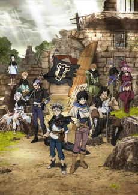

Ya es oficial: la temporada 2 de 'Black Clover' anuncia la fecha de su estreno. El regreso de Asta se presente como uno de los animes imprescindibles del año

Ya es oficial: la temporada 2 de 'Black Clover' anuncia la fecha de su estreno. El regreso de Asta se presente como uno de los animes imprescindibles del año Espinof
Ya es oficial: la temporada 2 de 'Black Clover' anuncia la fecha de su estreno. El regreso de Asta se presente como uno de los animes imprescindibles del año Espinof